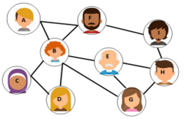

II. Algorithmique sur les graphes¶
Cours¶
Parcourir un graphe consiste à lister tous ses sommets, dans un certain ordre. Il y a deux raisons principales au parcours d’un graphe : simplement obtenir l’ensemble des sommets ou bien trouver un chemin spécifique reliant un sommet à un autre.
A. Parcours en largeur¶

Exemple
On considère un réseau social où ses utilisateurs sont représentés par les sommets d’un graphe et leurs liens par ses arêtes. On veut estimer comment une information va se propager dans le réseau, en fonction de qui commence à la propager. Chacun la transmettra à ses voisins, qui feront de même, etc.
Cela revient à faire un parcours en largeur du graphe.
Principe du parcours en largeur
- On part d’un sommet S.
- On visite les voisins de S.
- On considère chacun de ces voisins successivement, et on visite leurs voisins non-visités.
- Ainsi de suite jusqu’à ce qu’il n’y ait plus de sommets non-visités.
Exemple
Donner les parcours en largeur obtenus en partant des sommets B, E, C et H (on utilise l’ordre lexicographique pour citer les voisins d’un sommet).
Solution pour B
B, A, C, D, E, F, G, H, I
Solution pour E
E, B, G, H, A, C, D, F, I
Solution pour C
C, B, D, A, E, F, G, H, I
Solution pour H
H, E, G, I, B, F, A, C, D
Pourquoi est-il judicieux d’utiliser une structure de file pour cet algorithme ?
On utilise une file car on veut citer à la suite les sommets qui sont à une même distance du sommet de départ : on les cite au fur et à mesure qu’on les rencontre, au fur et à mesure que l’on peut trouver un chemin depuis le sommet de départ qui mène à ce sommet.
B. Parcours en profondeur¶

Exemple
Un robot d’indexation (« crawler ») indexe un ensemble de sites Web reliés par des liens hypertextes. Ceux-ci sont représentés par un graphe orienté dont ils sont les sommets, leurs liens correspondant à ses arcs. Pour cela, il les parcourt un par un au hasard, en partant de l’un d’entre eux, en suivant un chemin dans le graphe. Lorsqu’il ne trouve plus de nouveau site, il revient en arrière.
Cela revient à faire un parcours en profondeur du graphe.
Principe du parcours en profondeur
- On part d’un sommet.
- On visite un de ses voisins.
- Puis on visite un des voisins non-parcourus de ce dernier.
- Ainsi de suite jusqu’à ce qu’on considère un sommet n’ayant pas ou plus de sommets non-parcourus. Dans ce cas, on revient en arrière jusqu’à trouver un sommet non-parcouru.
- On s’arrête lorsqu’on ne trouve plus de sommet non-parcouru.
Exemple
Donner des parcours en profondeurs obtenus en partant des sommets 1, 2, 3 et 5 (lorsque l’on a le choix, on choisit l’ordre croissant des nombres).
Solution pour 1
1, 2, 3, 4, 5, 6
Solution pour 2
2, 1, 3, 4, 5, 6
Solution pour 3
3, 4, 2, 1, 5, 6
Solution pour 5
rien n’est possible
Pourquoi est-il judicieux d’utiliser une structure de pile pour cet algorithme ?
La pile sert lorsqu’il n’y a plus de nouveau sommet et qu’il faut revenir en arrière, par les sommets déjà parcourus et le dernier en premier, jusqu’à trouver un nouveau sommet.
C. Recherche d’un chemin¶
Pour chercher un chemin/une chaîne entre deux sommets, on peut s’inspirer du parcours en profondeur.
Que faut-il adapter ?
On part du sommet source, et on s’arrête lorsque l’on atteint le sommet destination, et on retourne ce chemin.
Pour rechercher le plus court chemin entre deux sommets, on utilise l’algorithme de Dijkstra, vu dans la séquence sur les réseaux informatiques.
D. Recherche d’un cycle¶
Pour obtenir tous les cycles d’un graphe, on peut s’inspirer de l’algorithme de recherche d’un chemin.
Que faut-il modifier dans celui-ci ?
On parcourt tous les sommets, et le sommet source et le sommet destination du chemin doivent être les mêmes.
TD¶
Exercice 1 : les parcours¶
-
Appliquer l’algorithme de parcours en largeur au graphe ci-dessous. Choisir un sommet duquel partir.
graph LR A --- B A --- D B --- C C --- D B --- E E --- C -
Appliquer l’algorithme de parcours en profondeur au même graphe, en partant du même sommet.
-
Lui appliquer l’algorithme de recherche de chaîne entre A et E.
Exercice 2 : les recherches¶
-
Appliquer l’algorithme de détection de cycle au graphe ci-dessous.
graph LR A --- B B --- F A --- C C --- E C --- D -
Appliquer le même algorithme à un deuxième graphe :
graph LR A --- B B --- F A --- C C --- E C --- D F --- D
Exercice 3 : algorithme de Dijkstra¶
Un politicien se trouve à sa permanence (en P) et doit se rendre à l’hôpital (en H) le plus rapidement possible. Le graphe ci-dessous représente le temps de trajet pour aller d’un point à un autre.
graph LR
A --3--- B
A --7--- C
A --4--- P
P --6--- B
B --4--- D
P --12--- D
P --11--- C
C --10--- G
D --9--- G
D --5--- F
G --10--- H
C --11--- E
E --9--- H- Quel chemin doit-il emprunter pour y arriver au plus vite ?
- Vérifier votre réponse avec l’implémentation de l’algorithme de Dijkstra fournie, en complétant la structure représentant le graphe et en faisant le bon appel de fonction (à modifier).
TP : Les parcours de graphes¶
A. Le parcours en largeur¶
Nous allons implémenter le parcours en largeur d'un graphe de manière itérative. Nous allons pour cela utiliser la représentation d'un graphe sous forme de liste d'adjacence, en utilisant un dictionnaire.
Le graphe g ci-dessous représente le réseau social du cours :
g = {'A':['B','F'], 'B':['A', 'B', 'C', 'D', 'E', 'F', 'G'], 'C':['B', 'D'], 'D':['B', 'D'], 'E':['B', 'G', 'H'], \
'F':['A', 'B', 'I'], 'G':['B', 'E', 'H'], 'H':['G', 'E', 'I'], 'I':['F', 'H']}
Nous allons distinguer les sommets visités des sommets parcourus : un sommet est considéré visité à partir du moment où ils ont été placé dans la file. Un sommet est parcouru quand ses voisins ont été visités. Il va falloir utiliser deux variables différentes pour identifier ces sommets.
Les étapes du parcours en largeur peuvent être résumées de la manière suivante :
- On considère un sommet S que l'on enfile dans une file F.
- On enfile les voisins de S dans F s’ils n'ont pas été visités, et on les considère visités.
- S est ajouté au parcours (il est considéré parcouru).
- On défile F et on considère le nouveau sommet de la file.
- On recommence ces 3 dernières étapes tant que F n’est pas vide.
1. Etapes préliminaires¶
-
Identifier toutes les structures de données nécessaires à l'implémentation de l'algorithme.
-
Identifier les opérations qui se répètent et en déduire la boucle à utiliser et sa condition de sortie.
2. Pseudo-code¶
Produire un pseudo-code de l'algorithme, avec toutes les structures à utiliser, mais sans le détails de toutes les instructions.
Par exemple, on peut dire "on considère S visité " sans expliciter comment est-ce qu'on le fait.
Proposition
Ci-dessous une proposition de pseudo-code :
Entrées:
la structure de graphe G
le sommet source S
Sortie:
la liste des sommets parcours
F est une file vide
On enfile S dans F
On initialise une liste parcours à la liste vide
On initialise une liste visites avec le sommet S
Tant que F non vide:
S <- le sommet défilé de F
On enfile dans F les voisins de S non visités, et on les considère visités
On ajoute S à parcours
On défile F
Fin tant que
3. Implémentation¶
-
Implémenter cet algorithme en utilisant la structure de file données ci-dessous.
-
Le tester sur le graphe
gdonné précédemment.
class File:
''' Définition d'une classe File
une instance File est crée avec une liste Python '''
def __init__(self):
"Initialisation d'une pile vide"
self.L = []
def vide(self):
"Teste si la file est vide"
return self.L == []
def defiler(self):
"Défile : enlève le premier élément"
assert( not(self.vide()) ), "File vide !"
return self.L.pop(0)
def enfiler(self,x):
"Enfile : ajoute un élément à la fin"
self.L.append(x)
def taille(self):
return len(self.L)
def sommet(self):
return self.L[0]
def parcours_largeur(G, S):
#à compléter
B. Le parcours en profondeur¶
Nous allons implémenter le parcours en profondeur d'un graphe de manière itérative. Nous allons utiliser la même représentation d'un graphe que pour le parcours en largeur, mais nous n'avons pas besoin ici de la distinction entre sommet visité et sommet parcouru.
Les étapes du parcours en profondeur peuvent être résumées de la manière suivante :
- On part d’un sommet que l’on empile dans P.
- Si le sommet de la pile a des voisins qui n'ont pas été parcourus :
- on considère le premier de ceux-ci
- on l’empile dans P
- on l'ajoute au parcours
- Sinon, on dépile P et on considère son sommet.
- On applique cette instruction conditionnelle tant que P n’est pas vide.
L'objectif est d'aboutir à l'implémentation de cet algorithme, en utilisant les mêmes étapes que précédemment.
1. Etapes préliminaires¶
Identifier les différentes variables à utiliser, et leur type.
Identifier les opérations qui vont se trouver dans la boucle, et sa condition de sortie.
2. Pseudo-code¶
Formuler un pseudo-code de l'algorithme, en vous basant sur sa description et sur les étapes préliminaires.
Proposition
Ci-dessous une proposition de pseudo-code :
Entrées :
la structure de graphe G
le sommet source S
Sortie :
la liste des sommets parcours
P est une pile vide
On empile un sommet dans P
On initialise une liste parcours avec le sommet S
Tant que P n’est pas vide:
S ← sommet de P
On initialise liste_voisins à une liste vide
s’ils ne sont pas dans parcours, on ajoute les voisins de S dans liste_voisins
Si liste_voisins n’est pas vide:
on sélectionne le premier de ses éléments
on empile cet élément dans P
on ajoute cet élément à sommets_parcourus
Sinon :
on dépile P
Fin si
Fin tant que
3. Implémentation¶
Implémenter l'algorithme obtenu.
On utilisera la structure de pile donnée ci-dessous :
class Pile:
''' Définition d'une classe Pile
une instance Pile est créée avec une liste Python '''
def __init__(self):
"Initialisation d'une pile vide"
self.L = []
def vide(self):
"Teste si la pile est vide"
return self.L == []
def depiler(self):
"Dépile : enlève le dernier élément"
assert( not(self.vide()) ), "Pile vide !"
return self.L.pop(len(self.L)-1)
def empiler(self,x):
"Empile : ajoute un élément à la fin"
self.L.append(x)
def taille(self):
"Retourne la taille (le nombre d'éléments) de la pile"
return len(self.L)
def sommet(self):
"Retourne le premier élément à sortir de la pile sans le dépiler"
return self.L[self.taille()-1]
def __str__(self):
"Affiche le contenu de la pile"
return "Le contenu de la pile est : " + str(self.L)
def parcours_profondeur(G, S):
#à compléter
Modifier l'algorithme précédent pour que le sommet choisi à chaque nouvelle étape soit choisi au hasard parmi la liste des voisins non-visités, et ne soit pas forcément le premier.